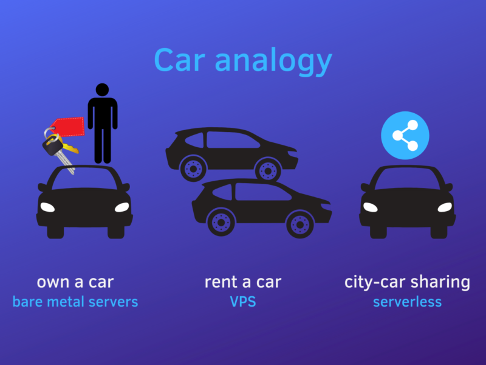
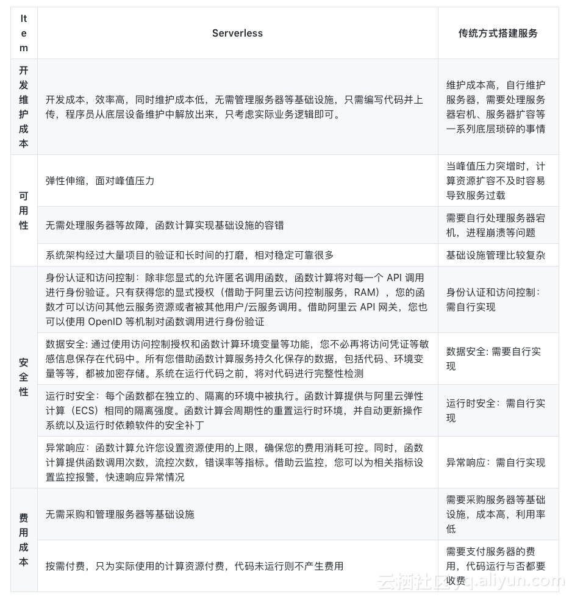
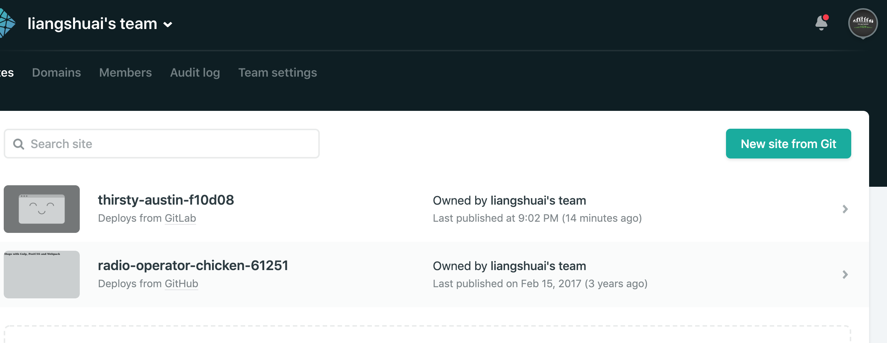
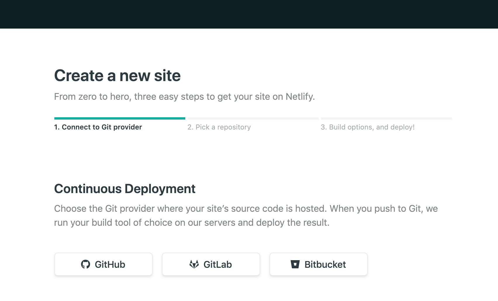
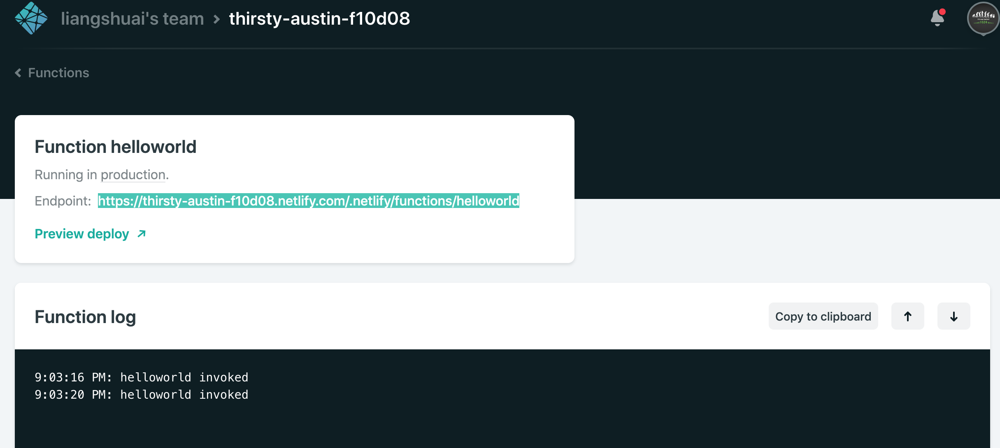
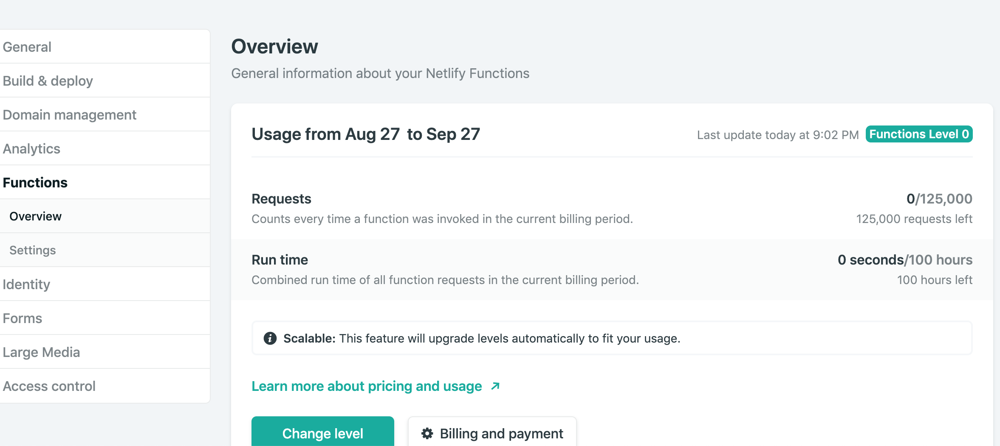
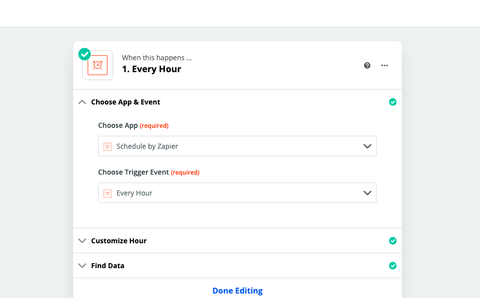
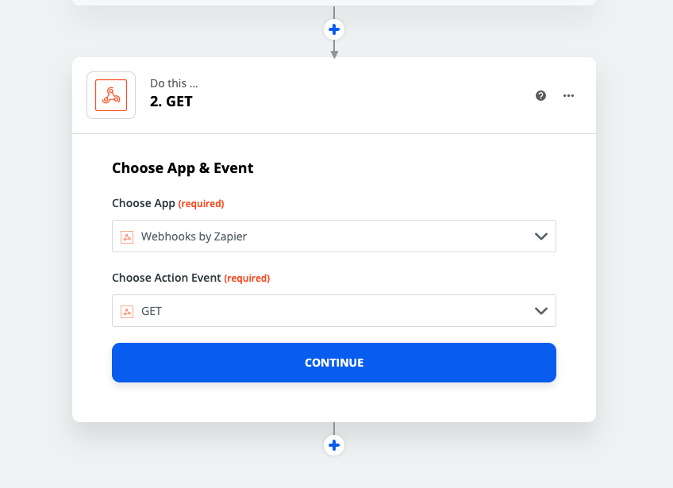
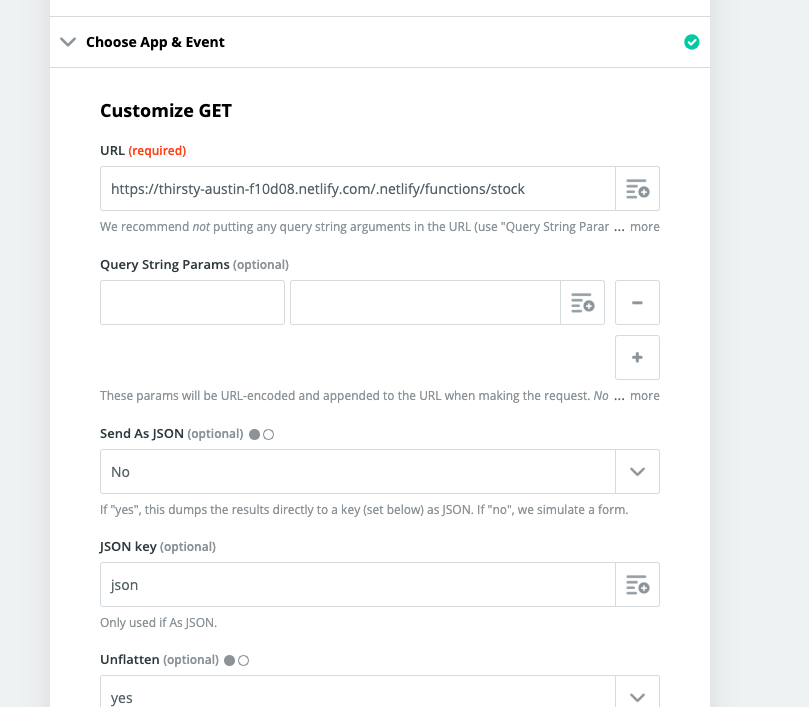

Serverless分享 课件
简介
无服务器运算（英语：Serverless computing），又被称为功能即服务（Function-as-a-Service，缩写为 FaaS），是云计算的一种模型。以平台即服务（PaaS）为基础，无服务器运算提供一个微型的架构，终端客户不需要部署、配置或管理服务器服务，代码运行所需要的服务器服务皆由云端平台来提供。亚马逊公司在2014年推出AWS Lambda，是最早提供这个服务的供应商
形象的比喻 
- 最古老的方式，买服务器， 找机房托管服务器， 以及进行运维
- 租用VPS、云服务器、虚拟机等方式， 省去了对服务器的物理管理，上线祝需要专注于软件环境搭建就可以了
- Serverless连软件环境都已经准备好了， 一键部署，并且可以自动伸缩， 具有高可用性

Serverless特点
- 只需要关心核心业务逻辑， 提升开发和运维的效率
- 基于事件触发， 灵活扩展
- 可以弹性收缩和扩容
- 按需付费，执行了才收费
- 细粒度的计算资源分配
- 无状态
应用场景
- WebHook
- 聊天机器人
- 发送通知
- 定时执行任务
- 网站和应用， 不需要长时间运行的， 冷启动时间较长的不适用
- 类型转换, 比如生成PDF, JSON格式转换, 图片压缩处理, 图像识别等
- 统计与监控
结构
AWS Lambda相对来说操作复杂一些, 这次技术分享使用Netlify提供的Lambda, 相对来说简单一些, 并且最终也是运行在AWS Lambda
一个最基本的Serverless Function结构类似如下
exports.handler = (event, context, callback) => {
// 函数的具体实现
}
这个无论AWS lambda还是Netlify lambda 还是国内阿里云或者平安云 都是一样的 其中
event包含了request相关的所有datacontext包含了用户的认证信息callback用户创建response
callback的回传的参数有两个, 类似Node.js , 第一个是error, 如果没有error的话写 null 就可以了
Hello World
mkdir netlify-demo
cd netlify-demo
npm init -y
npm i -S netlify-lambda
编辑package.json
"scripts": {
"start:lambda": "netlify-lambda serve src/lambda",
"build:lambda": "netlify-lambda build src/lambda"
}
src/lambda/helloworld.js 中代码如下
exports.handler = (event, context, callback) => {
callback(null, {
statusCode: 200,
body: 'Hello, world!',
});
};
netlify.toml
[build]
Functions = "lambda"
Command = "npm run build:lambda"
本地运行
npm run start:lambda
然后在 http://localhost:9000/helloworld 访问
Github或者Gitlab提交之后在Netlify中


之后就不用管了, 每次Git push之后就自动更新了
https://thirsty-austin-f10d08.netlify.com/.netlify/functions/helloworld


Zapier定时任务监控股票价格
const axios = require('axios')
const nodemailer = require('nodemailer')
const URL = 'http://hq.sinajs.cn/list=sh601318'
const getCurrentPrice = async function () {
const res = await axios.get(URL)
const arr = res.data.split(',')
return arr[3]
}
exports.handler = async function (event, context, callback) {
const price = await getCurrentPrice()
let transporter = nodemailer.createTransport({
service: '163',
secureConnection: true,
auth: {
user: 'serverless_demo@163.com',
pass: 'serverless123'
}
})
transporter.sendMail({
from: 'serverless_demo@163.com',
to: 'serverless_demo@163.com',
subject: 'Price updated',
html: price
}, (error, info) => {
if (error) {
return callback(error)
}
callback(null, {
statusCode: 200,
body: price
})
})
}
Zapier设置


